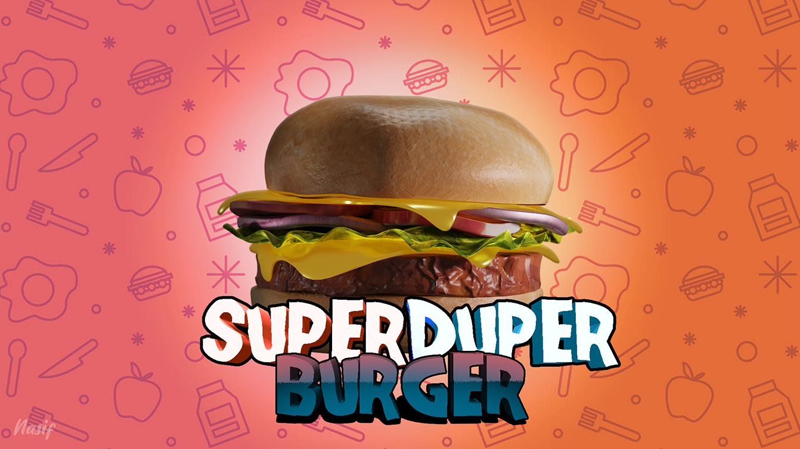

Projects
Second Year Project [P200]
A prescription writing software for my Project-200 course at University. I used Python3 as the main language, TkInter to make the GUI, sqlite3 for the database, and the PyFPDF library to export the data to a PDF file.
Apologies in advance if my spaghetti code makes you puke 😄
Artificial Intelligence Course Project
This is a very short project I did for our Artificial Intelligence lab course. It was made with Python 3, PyGame for the GUI and interaction, and PIL for converting the map to an array. The program lets you draw a map with walls (red), dust (peach/brown) and lets you put a vacuum cleaner on it which "cleans" the dust by traveling to available spots on the map. The program uses BFS as well as DFS to find where it can move to next.
Learn moreOther projects
Media
3D Renders

Other Media